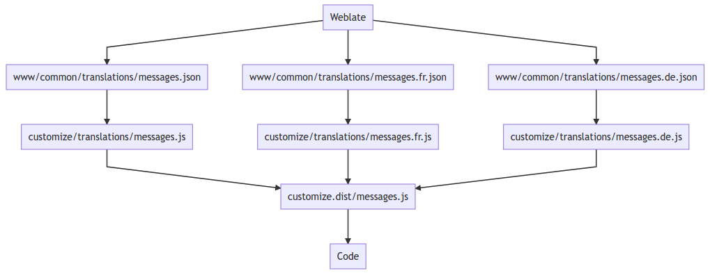

Translation keys#
The CryptPad interface is officially available in English and French. It is also translated (fully or partially) by the community into many other languages, German being the most actively maintained. This localization system works with a set of translation keys used in the code. Almost all the text displayed on the screen comes from such keys. The text associated to each key is stored in a single separate file. Although it is easy to use, this system has a complex structure.
Usage#
In order to use the translation keys in the code, just load the "Messages" module with RequireJS. This module is available at /customize/messages.js and automatically uses the language chosen by the user.
Once the module is loaded, Messages represents an object containing all the translation keys and can therefore be used in the code with Messages.translationKey which will refer to the text of the "translationKey" in the user's language.
Structure#
As detailed at the start of this guide, each instance of CryptPad can be customized, for example using bespoke images, logos, styles and static pages. Translation keys are also customizable elements, which makes the structure of the system more complex.
The keys are first created and translated in JSON files obtained from Weblate. These files are available in the www/common/translations/ directory. There you can find for example www/common/translations/messages.json (default English version) or www/common/translations/messages.fr.json (French version). These files cannot be customized directly because it would create merge conflicts for the instance administrators when upgrading CryptPad to a newer version (one key missing in the default translation file may in some cases make some features unusable).
In order to allow this customization step, the translation files are loaded in language modules present in the customize.dist/translations/ directory. The English and French versions exist there as customize.dist/translations/messages.js and customize.dist/translations/messages.fr.js. These language modules load their corresponding JSON file and allow administrators to extend or modify them. For more information on how to customize translation keys please see Instance customization in the administrator guide.
Finally, the file customize.dist/messages.js will retrieve the language module corresponding to the user's language (English by default). If a string is not translated into the chosen language, the English version will be used instead for this string.
